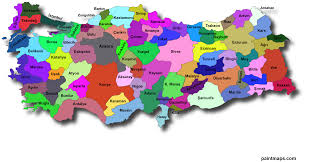

BİMASRAF, CG Bilgi Yazılım ve Danışmanlık Anonim Şirketi tarafından, 2019 yılında yazılım ve muhasebe
alanında uzman ekiplerce kurulmuştur.
Şirket kuruluş işlemlerinden, e-fatura süreçlerine ve gelir gider takibine kadar uçtan uça bir çözüm
sunan BİMASRAF, mükellef ve muhasebeciler arasındaki tüm işlemleri de şeffaf ve dijital olarak optimize
etmektedir.
Uzman çağrı merkezi ve geniş yazılım kadrosu ile bimasraf, iş ortaklarının taleplerine göre
özelleştirilmiş yazılım geliştirmeleri sunabilen, verimli ve etkili bir çalışma prensibiyle hizmet
vermektedir.
Artık
Türkiye'deyiz

Vizyonumuz
Müşteri memnuniyetini en üst düzeyde tutmak.
Yenilikçi ve etkili yazılım çözümleri sunmak.
Şeffaf ve güvenilir bir hizmet anlayışı ile çalışmak.